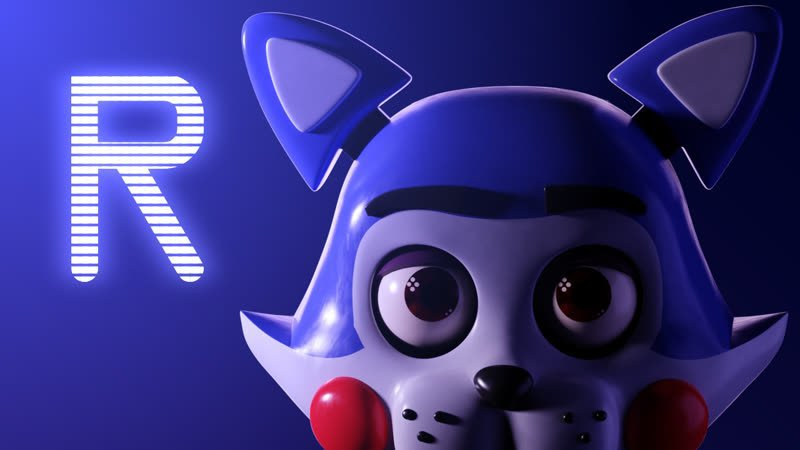
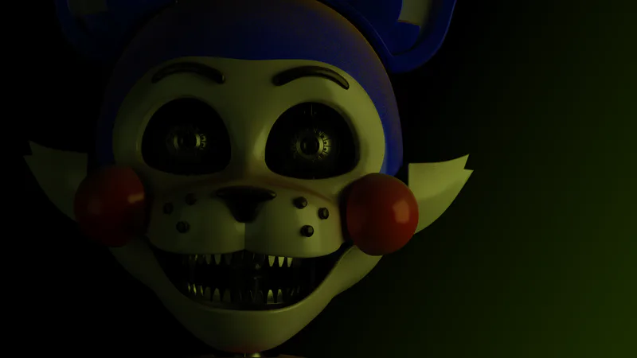
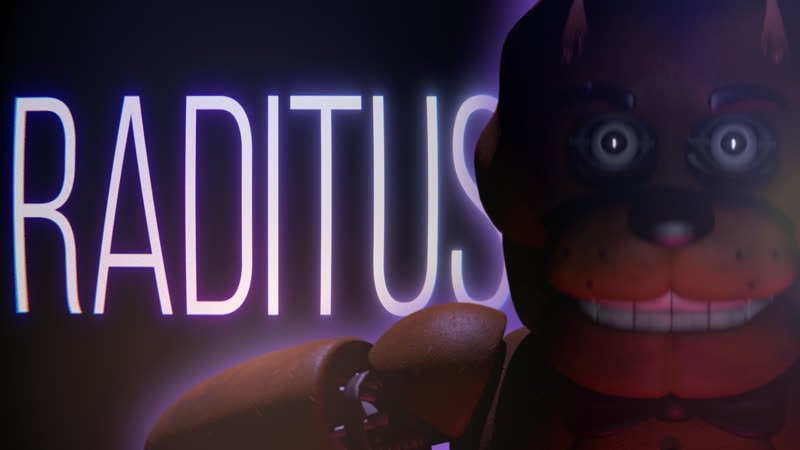

home /
teorias /
personagens /
fangames /
loja /
sons /
membro/
contato
FANGAMES

O QUE SÃO?
Five Nights at Freddy’s (FNAF), criado por Scott Cawthon em 2014, rapidamente formou uma comunidade extremamente ativa e criativa. Uma das maiores manifestações desse envolvimento são os fangames — jogos criados por fãs inspirados no universo de FNAF. Esses projetos vão desde simples recriações até expansões complexas da história e da jogabilidade original.Os fangames ajudaram a manter a popularidade da franquia durante períodos sem lançamentos oficiais, além de expandir a mitologia de FNAF com novas interpretações de mecânicas, personagens e enredos. Jogos como The Joy of Creation, Five Nights at Candy’s e POPGOES ganharam destaque, alguns até recebendo suporte ou reconhecimento oficial do próprio Scott Cawthon (como no projeto Fazbear Fanverse Initiative).Essa produção contínua de conteúdo fortalece a estrutura da comunidade de FNAF, criando uma relação onde fãs não apenas consomem, mas também produzem e renovam o conteúdo. No entanto, essa abertura também gera desafios, como debates sobre qualidade, originalidade e a linha tênue entre homenagem e cópia.

PRINCIPAIS FANGAMES
Muitos desses jogos ganharam destaque por sua qualidade, criatividade e fidelidade ao estilo original. Abaixo, listamos alguns dos fangames mais conhecidos e seus anos de lançamento:
- Five Nights at Candy’s (2015)
Criado por Emil Macko, Five Nights at Candy’s é um dos fangames mais populares da comunidade FNaF. O jogo segue uma mecânica semelhante ao original, mas apresenta novos personagens como Candy e Cindy, em um restaurante alternativo chamado Candy’s Burgers & Fries.
- The Joy of Creation (2016)
Desenvolvido por Nikson, The Joy of Creation se destaca por sua abordagem mais aterrorizante e jogabilidade em primeira pessoa. O jogo ganhou várias versões, sendo a mais famosa The Joy of Creation: Reborn, lançada em 2016, e The Joy of Creation: Story Mode em 2017.
- One Night at Flumpty’s (2015)
Criado por Jonochrome, esse fangame traz um toque de humor sombrio e personagens bizarros como Flumpty Bumpty, um ovo com rosto. O jogo se tornou um clássico da comunidade e teve duas sequências: One Night at Flumpty’s 2 (2015) e One Night at Flumpty’s 3 (2021), este último publicado oficialmente pela Clickteam.
- Those Nights at Rachel’s (2016)
Inspirado diretamente em FNaF, este fangame coloca o jogador em um novo ambiente com animatrônicos diferentes, mas com a mesma tensão e estilo gráfico sombrio. O jogo foi bem recebido pela sua atmosfera e modelagem de personagens.
- POPGOES (2016)
Desenvolvido por Kane Carter, POPGOES faz parte do "Fazbear Fanverse Initiative", um projeto apoiado por Scott Cawthon para promover fangames de alta qualidade. O jogo se passa em um universo alternativo com novos animatrônicos e enredo próprio, e ganhou uma versão atualizada chamada POPGOES Arcade em 2020.
Esses fangames mostram o quanto a comunidade FNaF é criativa e apaixonada pela franquia. Muitos desses títulos conquistaram não só os fãs, mas também o próprio criador da série, Scott Cawthon, que chegou a apoiar oficialmente alguns deles através do projeto Fazbear Fanverse.

QUANTAS COPIAS EXISTEM?
A franquia Five Nights at Freddy’s (FNaF) não apenas conquistou uma base de fãs global, mas também inspirou uma vasta quantidade de fangames criados por desenvolvedores independentes. Estima-se que existam mais de 10.000 fangames baseados em FNaF, disponíveis em plataformas como Game Jolt. O primeiro fangame notável foi Five Nights at Treasure Island, lançado em 2014. Desde então, a comunidade tem produzido uma quantidade impressionante de jogos, com mais de 4.700 fangames hospedados na Game Jolt . Esses jogos variam de simples homenagens a inovações significativas na jogabilidade e narrativa.Alguns fangames receberam reconhecimento oficial de Scott Cawthon, o criador de FNaF. Um exemplo notável é o Fazbear Fanverse Initiative, uma colaboração entre Cawthon e desenvolvedores de fangames populares, visando apoiar e promover esses projetos.